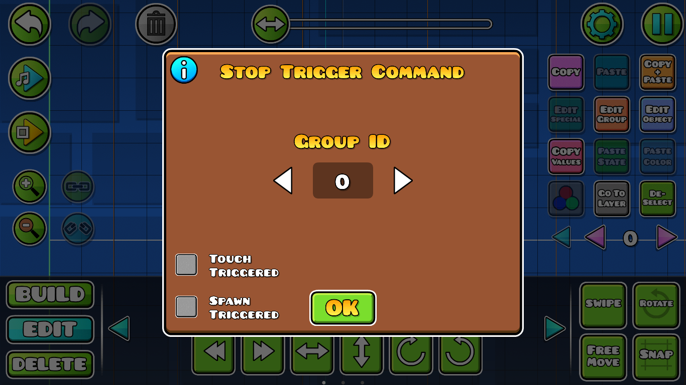

Stop: Este trigger sirve para detener la función o acción que esté haciendo o aún no comience a hacer algún otro trigger o varios de ellos a la vez con una misma GroupID.

En este ejemplo el trigger "Move" hará que el pincho siga al jugador durante un largo periodo de tiempo. Sin embargo, si al Move le asignamos una Group ID, en este caso el "2", y usamos un "Stop", esta función se detendrá después de que el jugador pase por este trigger, el cual detendrá su función sin importar la cantidad de tiempo que haya sido programada en el Move o en algún otro trigger.
Tutorial recomendado: